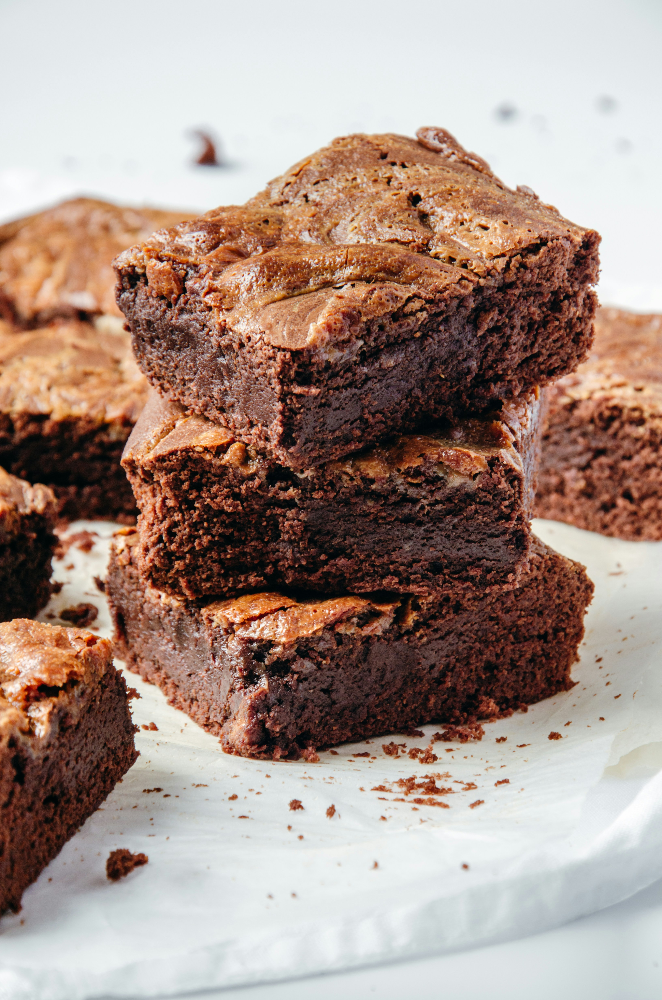

Home
Brownie

Description
These homemade brownies are dense, chewy, and intensely chocolatey—the kind
of treat that satisfies any sweet tooth. With crisp edges and a soft, gooey
center, they're perfect for brownie lovers who want that bakery-quality texture
at home.
Ingredients
- ½ cup (1 stick) unsalted butter
- 1 cup granulated sugar
- 2 large eggs
- 1 teaspoon vanilla extract
- 1 teaspoon vanilla extract
- ½ cup all-purpose flour
- ¼ teaspoon salt
- ¼ teaspoon baking powder
- ½ cup chocolate chips or chunks (optional)
Directions
- Preheat your oven to 350°F (175°C). Grease or line an 8x8-inch baking pan with parchment paper.
- In a microwave-safe bowl, melt the butter. Stir in sugar, eggs, and vanilla.
- Add cocoa powder, flour, salt, and baking powder. Mix until just combined—do not overmix.
- Fold in chocolate chips or chunks if using.
- Pour the batter into the prepared pan and smooth the top.
- Bake for 20-25 minutes, or until a toothpick inserted near the center comes out with moist crumbs (not wet batter).
- Let cool completely in the pan before slicing into squares.